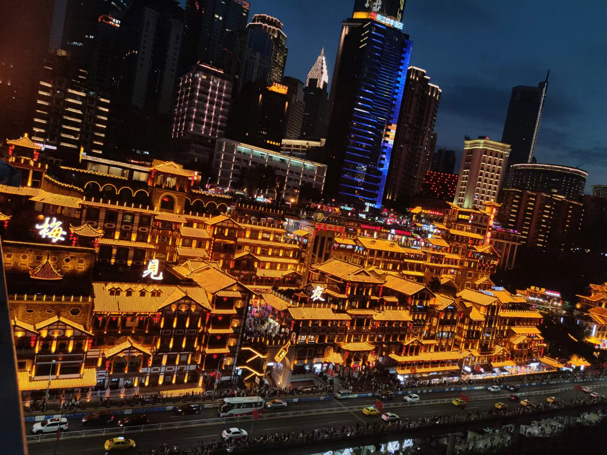

步入大学后,学习已不再那么的紧张,似乎有着更多的时间和空间由你自己去 支配,只要你有足够的激情投入。渐渐的,感觉自己在无形中长大了,独立了,坚强了,时间老人总是那样的神奇, 在他的带领下我找到了那片属于自己的天空。在学习上,自己从不敢懈迨,因为自己很清楚,生活是不会同情弱 者的,不上进的人不该拥有今天的美好,即使生活给予我太多的磨难,然而，我对自己依旧那么自信，其实有 时候人真的很无奈，那也成为我振作起来的唯一动力。在我努力的过程中，我也渐渐明白大学其实是一个大舞台，一个属于你自己的舞台。
上了大学后，我认识到每个学生都能学得不错，都能保持平均分数以上的成绩， 而且也能对所学内容领会透彻。课程并非很艰难，因为标不是在没有任何帮助的情况下自学，也不是拿你完全 不理解的测验考你。有人说，大学不过是高中的延伸，在这里还得继续高中的那种拼命苦学；又有人说， 跨进大学校门，前途和事业便有了保障，可以痛痛快快玩四年了。我认为，大学是一幅空白画卷，等着你用 智慧和双手描绘属于自己的七彩青春。那个夏天，我跨进了大学校门。在这里你既是导演又是主角，只要你敢 于尝试，那么所有的聚光灯都会向你打来。而你要做的就是努力去演好你的角色，无论发生什么，相信自己， 没错的。